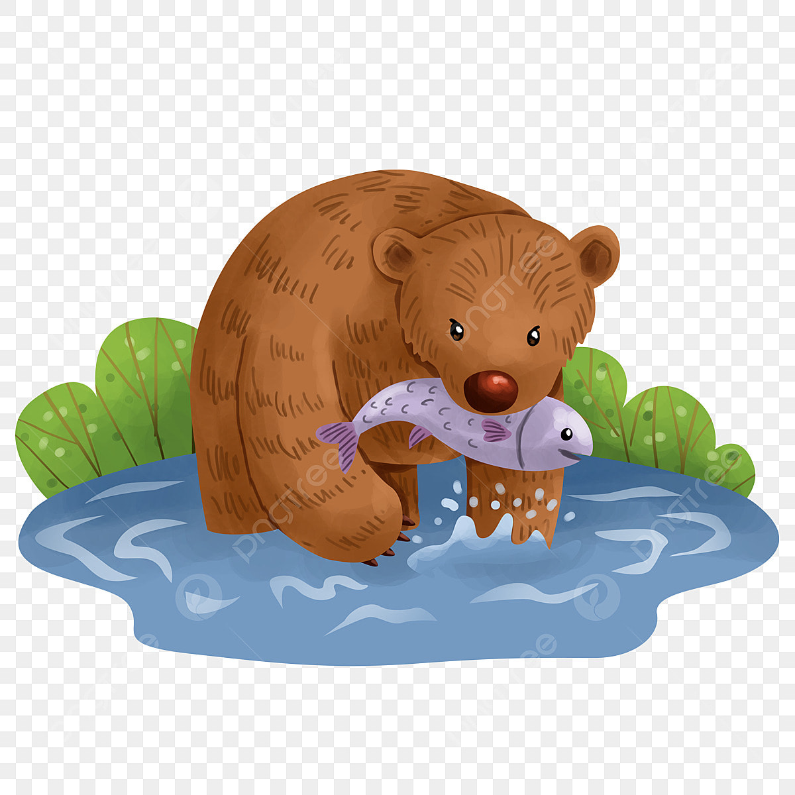

Hábitos de caça
Os ursos são caçadores oportunistas e adaptam sua dieta conforme a estação e a disponibilidade de alimento. Apesar de serem considerados onívoros, algumas espécies, como o urso-pardo, caçam presas como peixes, roedores e até filhotes de cervos. Ursos-polares, por outro lado, são predadores habilidosos, utilizando técnicas furtivas para capturar focas no gelo. Eles esperam pacientemente próximas a aberturas na superfície congelada, atacando quando a presa emerge. Já o urso-negro prefere forragear por frutas, insetos e pequenos animais. No geral, sua caça é eficiente, mas eles também dependem bastante da coleta de alimentos.

Hábitos de hibernação
Durante o inverno, muitos ursos entram em um estado de hibernação para sobreviver ao frio e à escassez de alimentos. Nesse período, sua temperatura corporal cai ligeiramente, o metabolismo desacelera e eles podem passar meses sem comer, beber ou excretar. Antes de hibernar, acumulam grandes reservas de gordura, consumindo alimentos em excesso no outono. Diferente de outros animais hibernantes, os ursos podem acordar se perturbados e até dar à luz durante o inverno. Quando a primavera chega, eles emergem da toca fracos e famintos, prontos para recuperar a energia perdida.

Hábitos de acasalamento
Os ursos geralmente se acasalam na primavera e no início do verão, quando há mais comida disponível e as fêmeas estão em melhor condição física. Após o acasalamento, ocorre a implantação tardia do embrião, o que significa que o desenvolvimento só começa meses depois, garantindo que os filhotes nasçam durante a hibernação, no inverno. As fêmeas escolhem parceiros fortes e muitas vezes podem acasalar com vários machos na mesma temporada. Depois do nascimento, geralmente de um a três filhotes, a mãe cuida deles sozinha por até dois anos, ensinando-os a sobreviver na natureza.
Roooaarr! Ei, humano curioso, obrigado por tirar um tempinho para conhecer mais sobre a minha vida! Nem todo mundo se interessa pelos meus hábitos de caça, hibernação e acasalamento, então fico feliz por você ter lido até aqui. A natureza tem muito a ensinar, e eu sou apenas uma pequena parte desse grande mundo selvagem. Agora, se me der licença, vou procurar algo para comer ou tirar uma soneca... Nos vemos por aí (de preferência, de longe)! 🐻🍃